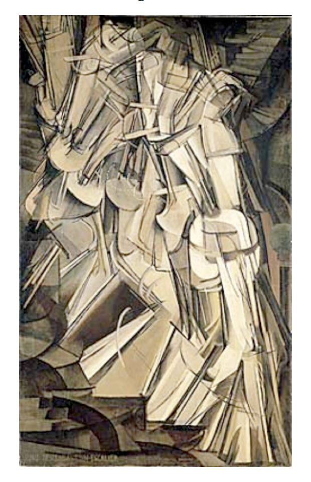

Charles D. Tarlton
Northampton, Massachusetts, USA
Marcel Duchamp’s Nude Descending a Staircase #2:
Close Reading of a Tanka Prose

Among the many true things that are difficult to credit are two counter-intuitive ideas about the perception of motion. First, is the idea of the pervasiveness of motion underneath our perception of even the most static objects. Beneath the visual the surface of a rock, say, there are the molecules and atoms, pinpoints of magnetic energy, in constant motion in circumstances of mostly empty space, creating for us a sensation of resistance, of solidity. The world of solid things, then, is a kind of illusion. We might even say that the solidity of the world is of our own making.
Similarly, our perception of movement consists in a series of still exposures, “sensations in the retina,” that linger briefly so that when an object is “moving,” what we see is a series of just slightly different still images. This is like the movies, where still photographic images, each just slightly different than the next one, create the illusion of movement.
I take Marcel Duchamp’s Nude Descending a Staircase #2 to be a commentary on the optical mechanisms needed to represent motion, especially in art. Duchamp portrays the perception of motion ironically, letting us see in a single static image all the elements that, if portrayed in sequence, would have given us to movement. The picture is a kind of visual oxymoron; movement and non-movement at the same time. And this doesn’t even take into account that the picture is just cubist enough to make us see plurals in a singularity (or is it the other way around?)
The Bridge
The headnote quotation from Constable (see below) serves as a bridge between art and science. Art cannot take its object in nature for granted, while science looks behind our aesthetic experiences to insist on another kind of truth. The question becomes how can we best represent the illusive nature of our perceptions?
The Prose
The idea of time is a real limitation of painting. Clouds, for example, are constantly drifting, billowing, rising, stretching, changing colors; none of these processes can be captured in paint. This remains true despite the rise of technologies for creating the illusion of movement through time.
Duchamp, we might say, reveals the trick behind the illusions of movement, but he does that by putting all the different images in one. The “idea” of motion comes across, but not the sensation. We understand, then, how we have to meet the artist half way - the painter or the film-maker - willingly providing the negative capability sufficient to seduce ourselves that Beauty really is Truth and Truth is really Beauty.
The Tanka
no painting of clouds
is other than imagining
or remembering
how they were or ought to be
fleeting dreams or memories
The mind settles for an instant on a formation of clouds (the progress of a relationship or the intensity of a mood) and wants to fossilize it, preserve, and keep it just that way forever. But as we know, real clouds go on and on, and it is only in the mind that we imagine or remember them in one particular form. Moods and relationships are in the long run like dreams.
sixteen frames/second
mark perceptions of motion
from still instances
the first yet unforgotten
as the rest push into view
Here is the human factor; our brains process visual images as continuous at the rate of 16 frames per second. At exactly that speed a series of still images “appears” to be one, continuous, and kinetic. What we see lingers in the eye as it is gradually replaced by the next thing – an illusion of continuity – the phi phenomenon.
or it’s memory
the way each instance piles on
before or after
it could just as well have been
a nude ascending backward
The eye proceeds across a landscape or a portrait, moving forward and around but always having to remember what it has just seen. The memory is the elastic that stretches to include more and more of what we are seeing (what we have seen) and keeps the idea of it whole. Duchamp portrays for us an idea of this collection and storage of images, only the invisibility of an extending memory is made manifest, we see the several stages all at once. So, it is with life in general; it is long-range stores of memory that make one day seem so much like the next. It’s as if Robert Campin’s Portrait of a Man, were to reach up and scratch the side of his nose.
Author's Notes:
1. Nude descending a staircase #2 can be viewed online.
2. The tanka prose previously appeared in Ribbons (Summer, 2016). Here is the poem as it originally appeared.
MARCEL DUCHAMP’S NUDE DESCENDING A STAIRCASE #2
Painting is a science, and should be pursued as an inquiry into the laws of nature. Why, then, may not landscape painting be considered as a branch of natural philosophy, of which pictures are but the experiments?
– John Constable
We cannot remember, draw, or photograph objects or events in the world with true accuracy. The obstacle is Time. Physical things do not remain still; the slowest and most solid objects are awhirl beneath their illusory surfaces. Obvious objections to this thesis are, of course, movies and television; but these techniques depend upon our creating the illusion of motion in time from the manipulation of static images. Duchamp (above) does not overcome these objections, he probably never meant to, and his painting only reminds us that the world goes by faster than we can capture it.
no painting of clouds
is other than imagining
or remembering
how they were or ought to be
fleeting dreams or memories
sixteen frames/second
mark perceptions of motion
from still instances
the first yet unforgotten
as the rest push into view
or it’s memory
the way each instance piles on
before or after
it could just as well have been
a nude ascending backward
|